A federated approach to antimicrobial resistance (AMR) analysis from MALDI-TOF spectra
1. Introduction
Antimicrobial resistance (AMR) is a major global health problem, every year the treatment of an increasing number of infections becomes harder, so choosing the right antibiotic is increasingly important and depends on how quickly and reliably the pathogen’s susceptibility to the drug can be determined. Today this information comes from the antibiogram, which takes on average 24 to 72 hours. MALDI-TOF mass spectrometry is already used routinely to identify the microbial species in a few minutes. In the second half of the last decade it was discovered that the same spectrum also contains a weaker signal, related to resistance, potentially learnable with pattern recognition techniques.
The dataset used is DRIAMS (Database of Resistance Information on Antimicrobials and MALDI-TOF Mass Spectra, [1], preprint [2]): over 300,000 spectra from four Swiss hospitals: A (Universitätsklinik Basel), B (Kantonsspital Baselland), C (Kantonsspital Aarau) and D (Viollier AG, a private diagnostic laboratory). This work used the 2018 archives, for a total of 47,628 spectra.
The work presented here is organized into eight successive analyses (01–08). Starting from the simplest baselines (01, 02), we applied and verified the performance of various ML models of increasing complexity (LR, ML, RF). These results confirmed that greater model complexity does not lead to better performance, shifting attention from the model to the data. Analysis 03 shows that an important point in building reliable predictions is the domain shift between hospitals. Analyses 04 and 05 (MLP backbone with multi-label head, and Random Forest) rule out the last modeling alternatives. From there the work converges on federated learning, first tested on a controlled case (06a/06b), then extended to six drugs and four sites (08), with a series of diagnostics aimed at understanding why some sites are hard and whether their data “harm” the federation.
The code, notebooks and full documentation (Sphinx) are in the GitHub repository asd-standard/Dryad_DRIAMS [3]; the report refers to it section by section, so that every result can be traced and reproduced.
2. The dataset and the processing pipeline
The DRIAMS archive for each site [1] contains four directories: raw/ (spectra as extracted from the instrument), preprocessed/ (after quality control, smoothing, baseline correction and normalization), binned_6000/ (spectra binned along the m/z axis with a 3 Da step, hence 6000 features) and id/ (metadata with species and AMR profile). A MALDI-TOF spectrum is an intensity measurement as a function of the mass-to-charge ratio, between ~2,000 and ~20,000 Dalton. The acquisition window contains the main peaks from ribosomal and constitutive proteins, whose purpose is to identify the species, while the AMR signal is weaker and more distributed. In the binned file each spectrum is a series of 6000 (bin, intensity) pairs normalized by Total Ion Count. In the processed dataset each sample becomes a row with columns code, species, label, bin_0 … bin_5999, with label 0 (S, susceptible) or 1 (R, resistant).
The processing pipeline, 00-Data-Processing/process_driams.py, merges the site metadata, counts the S/R labels for each drug and keeps only the combinations with at least 500 susceptible and 10 resistant spectra. The result is 97 drug–site combinations; after merging name variants (Fosfomycin/Fosfomycin-Trometamol, Cotrimoxazole/Cotrimoxazol, Ampicillin/Ampicillin-Amoxicillin), 38 distinct drugs remain, 10 of which are present at all four sites: Amikacin, Amoxicillin-Clavulanic acid, Cefepime, Ceftazidime, Ceftriaxone, Ciprofloxacin, Gentamicin, Imipenem, Piperacillin-Tazobactam, Vancomycin. Intermediate (I) and untested labels are excluded; consequently each spectrum is tested on average for ~6.3 drugs, a form of partial labeling that accompanies the whole work. The pipeline and dataset statistics are documented in docs/data-processing.rst.
3. Why it is hard (and why it matters for federated learning)
Weak signal and spectral window. The AMR signal is at least an order of magnitude weaker than the species peaks; resistance peaks often fall outside the acquisition window (2,000–20,000 Da), forcing the model to look for indirect indicators (metabolites, sub-molecules). Only for some drugs, such as moxifloxacin, does the strong signal fall inside the window.
Species confounding. Different species have very different resistance rates to the same drug: the species is therefore a confounding variable, and the risk is that the model learns the “species signature” instead of the resistance mechanism.
Class imbalance. Resistance rates are often low: even when aggregating or federating, for some drugs the share of resistant samples falls below 5%, with fragile metrics and unstable decision thresholds.
Heterogeneity between sites and panel coverage. The four hospitals differ in instrument, calibration, population and bacterial flora; only 10 of the 38 drugs are common to all sites. Heterogeneity is not a technical detail: it is the reason why local models would have limited coverage, and why aggregation or federation is needed.
Partial labels. Each spectrum is tested for ~6.3 drugs, so each drug has a different subset of samples: a design constraint that the multi-label formulation (analysis 04) will try to exploit.
Scope |
Difficulty |
|---|---|
Data |
Scarcity per drug/species (2–3 resistant in some sites); S/R imbalance (<5% R for some drugs); partial labels (~6.3 drugs tested per spectrum) |
Signal |
Resistance proteins outside the 2,000–20,000 Da window; species confounding; domain shift between sites (15–19 pt cross-site drop); imperfect TIC normalization |
Deconfounding |
Species and site are redundant, non-linear signals that cannot be localized in the top-500 bins; the site is entangled with resistance |
Models |
Complexity does not pay off: MLP ≈ logistic regression, CNN with no improvement, unstable attention, RF slightly behind |
Evaluation |
Hyperparameter and threshold selection on a single validation set; imbalanced classes; a single seed in the first round |
Federated |
It is a simulation (public dataset, in-memory Flower/Ray); non-zero centralized–federated gap; computational constraints |
The table summarizes the difficulties, but one point deserves to be isolated from the start: models should not be measured only “inside” a site, but “across” sites. This insight, verified in analysis 03, becomes the central theme of the work and the justification for federated learning.
4. Methodology
4.1 - Models, metrics and evaluation protocol
Every notebook applies log1p + z-score standardization, with statistics fitted only on the training set to avoid data leakage. The splits are species-stratified: no species appears in training and test at the same time, so the model cannot memorize the species’ spectral signature. The metrics are Balanced Accuracy (sensitive to imbalance) and AUC-ROC (threshold-independent); the decision threshold is optimized on a validation set (typically site A) and reused on the target sites.
Two references frame all experiments: pooled training (data from all sites aggregated) is the centralized upper bound; cross-site evaluation (train on A, test on B/C/D) is the lower bound with data from a single site. The models considered, in turn: logistic regression L2 (optionally with PCA at 94% of variance), MLP 6000 → 512 → 256 → 128 → 2 with BatchNorm/ReLU/Dropout (plus a variant with sigmoid-gated attention), Random Forest, and a multi-label backbone with 10 heads (one per drug) and a masked BCE loss.
4.2 - The federated simulation
federated learning is the operational proposal of this work: each site trains locally and shares only model updates. The simulation uses Flower[6] with a Ray backend and four clients, one per site, with the strategies FedAvg[4] (average of weights proportional to the number of examples), FedProx[5] (proximal term μ to contain client drift), FedLR (federated logistic regression with warm start) and FedRF (tree collection: the global ensemble is the union of the local trees). Small sites train with more “mixing” per round, and the models are evaluated at every round on the per-site holdouts, which are never used in training. Details are in docs/08-Federated-mlp-lr-rf/methodology.rst.
It must be said clearly: this is not a real federation. The DRIAMS data are public and the simulation runs in memory on a single machine; what is tested is the protocol (who trains on what, what is exchanged), not the communication infrastructure. The constraint nevertheless remains the realistic starting point of the work.
4.3 - Organization of the work and the repository
The repository asd-standard/Dryad_DRIAMS [3] contains the whole project: the processing pipeline (00-Data-Processing/), the eight analyses (folders 01-…–08-…, with their notebooks), the dedicated diagnostics and the Sphinx documentation in docs/ (with glossary, validation protocol and a page for each analysis). The repository holds code and documentation (.ipynb, .py, .rst, .md), while the generated results (CSVs, figures, models) are excluded from version control and remain local in each analysis folder (Google Drive). The following table maps the report’s path onto the repository.
Analysis |
Question |
Where |
|---|---|---|
01 |
Does the signal exist? Does a linear baseline capture it? |
01-LogisticAnalysis-Aggregated/ (01-LogisticAnalysis-Aggregated.ipynb, 01-01-LR-Diagnostics.ipynb) |
02 |
Does complexity (MLP, attention) add anything? |
02-MLPClassifier-Aggregated/ (02-…, 02-01-Loss-Curves.ipynb) |
03 |
Does the model generalize across sites? Why not? |
|
04 |
Can partial labels be exploited with the multi-label formulation? |
04-Multi-Label-mlp/ (04-00/01/02/03) |
05 |
Does another model family (RF) change things? |
05-RandomForest-Ceftazidime-Ecoli/ (05-01-CrossSite-Seeded.ipynb) |
06a/06b |
Does federated learning work on the controlled case? |
|
07 |
What is the centralized ceiling, and with which hyperparameters? |
|
08 |
Does federated learning hold on 6 drugs × 4 sites? Why are some sites hard? |
08-Federated-mlp-lr-rf/ (+ Species-Masking/, Agg-Analysis/, Site-D-Ablation/) |
The documentation of the analyses cited below (e.g. docs/03-CrossSite-Classifier/results.rst, docs/08-Federated-mlp-lr-rf/drugs.rst) accompanies the notebooks with reproducible tables and figures; precise references are given section by section.
5. The experimental path: from 01 to 08
5.1 - 01: Is there a signal? The linear baseline
The first question is the most basic: is there information about resistance in the spectrum that a simple logistic regression can capture? On Ciprofloxacin, the only drug for which the unregularized model was also evaluated, the “raw” logistic regression reaches Balanced Accuracy 0.634 / AUC 0.719, while L2 with class_weight=‘balanced’ and an optimized threshold reaches 0.721 / 0.798; the gain is in the ranking, not only in the cut (decision threshold). PCA at 94% of variance brings no benefit (variations ≤0.008 BalAcc), so the full 6000-bin spectrum is kept. The optimal threshold stays close to 0.5, and threshold tuning changes Balanced Accuracy by at most 0.005. In short, the signal is there, and it is already largely linear. The next question is whether a non-linear model can extract more of it. Notebook: 01-LogisticAnalysis-Aggregated/.
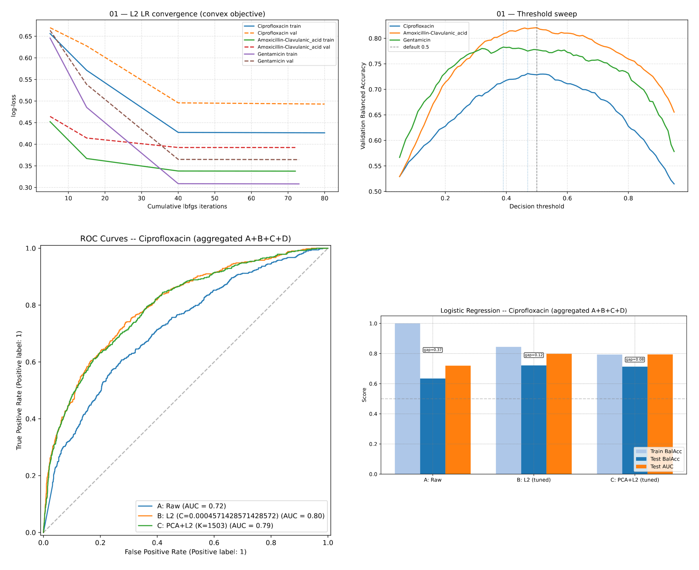
Figure 1. Logistic regression diagnostics on Ciprofloxacin: convergence, threshold sweep, ROC curves and comparison of variants. Code: 01-LogisticAnalysis-Aggregated/.
Documentation: Analysis 01 — Logistic Regression.
5.2 - 02: Does complexity pay off?
The MLP does not beat logistic regression: on Ciprofloxacin 0.720 / 0.806 (attention variant) versus 0.721 / 0.798 for L2; on Amoxicillin-Clavulanic acid 0.819 / 0.895 versus 0.821 / 0.892; on Gentamicin 0.784 / 0.853 versus 0.779 / 0.859. Attention helps only on Ciprofloxacin (+0.013 BalAcc) and does not stand out elsewhere. The bottleneck is not model capacity but the data. If so, the question becomes another one: does the classification the model has learned also hold outside the site where it learned it? Notebook: 02-MLPClassifier-Aggregated/.
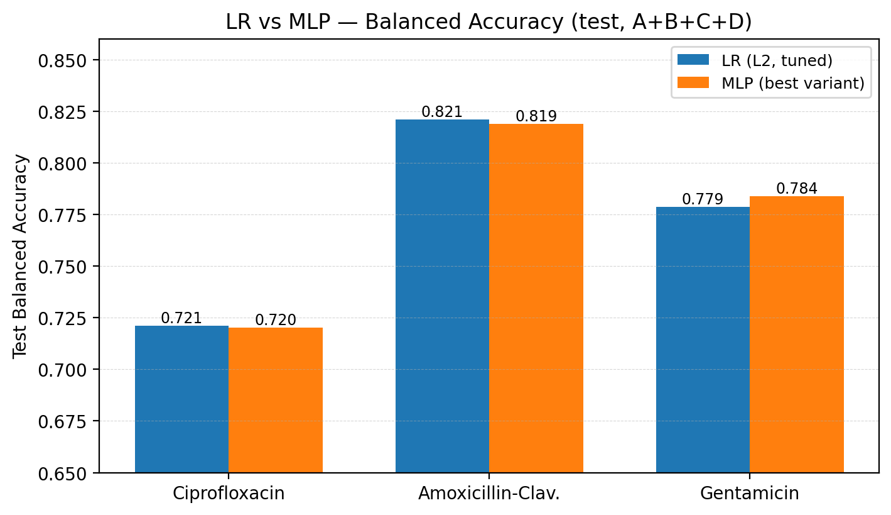
Figure 2. Direct comparison of Balanced Accuracy on the aggregated test: L2 logistic regression versus the best MLP variant per drug. The two families remain aligned on all three drugs. Code: 01-LogisticAnalysis-Aggregated/, 02-MLPClassifier-Aggregated/.
Documentation: Analysis 01 — Logistic Regression · Analysis 02 — MLP Classifier.
5.3 - 03: The central problem: domain shift
Analysis 03 answers the question with a clean protocol: train on site A alone, test on B, C, D and on the B+C+D pool. The results are summarized in the table and figures below: each cell is the average over the 10 drugs common to the four sites of Balanced Accuracy, the average of sensitivity and specificity, i.e. of how many resistant and how many susceptible samples the model recognizes, weighting the two classes equally.
Method |
A-val |
B |
C |
D |
B+C+D |
Gap A-val → B+C+D |
|---|---|---|---|---|---|---|
L2 LR |
0.828 |
0.711 |
0.617 |
0.611 |
0.641 |
+0.187 |
0.821 |
0.714 |
0.622 |
0.609 |
0.643 |
+0.178 |
|
Reg MLP |
0.818 |
0.693 |
0.622 |
0.601 |
0.634 |
+0.184 |
Attn MLP |
0.762 |
0.648 |
0.598 |
0.583 |
0.608 |
+0.154 |
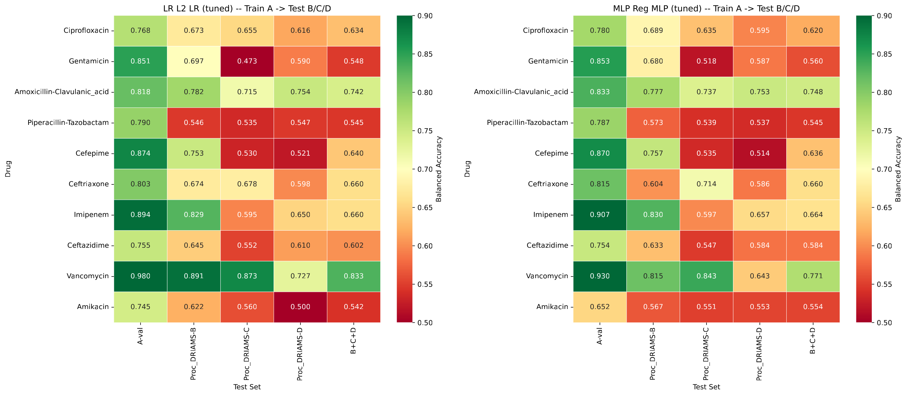
Figure 3. Balanced Accuracy heatmap per drug (rows) and target (columns), models trained on A: on the left L2 logistic regression with a tuned threshold, on the right the regularized MLP. Code: 03-CrossSite-Classifier/.
Documentation: Analysis 03 — Cross-Site Classifier.
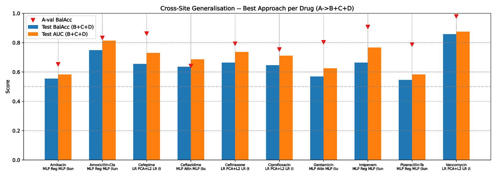
Figure 4. Best cross-site approach per drug (B+C+D pool): Balanced Accuracy (blue bars) and AUC (orange bars) against the Balanced Accuracy on the A validation set (red triangles); the distance from triangle to blue bar is the cost of domain shift. Code: 03-CrossSite-Classifier/.
Documentation: Analysis 03 — Cross-Site Classifier.
The degradation is 15–19 points of Balanced Accuracy with respect to validation on A, and it cannot be explained by sample size: site D is the largest by number of spectra but the hardest target (0.611 with L2), while the smallest, B, is the easiest (0.711). The ranking of sites (B 0.692 > C 0.615 > D 0.601, averaging over models) and the per-drug patterns all point in the same direction: the best transfer is on Amoxicillin-Clavulanic acid (0.737), the worst, close to chance, on Piperacillin-Tazobactam (0.536) and Amikacin (0.537); Gentamicin collapses specifically on C (0.473). Cases such as Cefepime (0.751 on B, 0.529 on C) show that failures follow prevalence misalignments between sites. This domain shift phenomenon can have various causes, which we can only hypothesize: acquisition methodology, different instruments, calibration, different population and bacterial flora.
A second piece is the 03-01 diagnostic (03-01-Loss-Curves.ipynb): it retrains both MLP variants on the 10 drugs on the same A split (80/20, seed 42) with fixed configurations (hyperparameters computed in 07 for the regularized variant, the fixed configuration for attention), logging loss and AUC per epoch. It is not a new model search: it serves to understand how the models learn and how much to trust the selection.
Three things emerge:
Overfitting is systematic: the regularized variant trains for ~43 epochs on average (optimum ≈36; 7 models out of 10 in early stopping) and the validation−train gap at the best epoch ranges from 0.015 (Vancomycin) to 0.254 (Ceftazidime), up to 0.31 at the end of training (Ciprofloxacin); attention, with a fixed configuration, stops much earlier (best epoch ≈6 on average) with final gaps up to 0.55.
Selection on a single validation set is fragile: between two reasonable selections (07 parameters vs 03 grid) 9 drugs stay within ±0.06, but Ciprofloxacin drops by −0.060 and Amikacin rises by +0.025, and Amikacin also differs by +0.086 from the published run, a reminder of the variance when resistant samples are few.
Validation on A does not predict transfer: correlation 0.59–0.68 with B+C+D (0.68 here), with cases such as Piperacillin-Tazobactam (0.797 → 0.535) and Gentamicin (0.847 → 0.575).
These conclusions accompany the whole work: the models optimize well on A but the domain is another matter: multi-seed replicates, threshold-free metrics and cross-site evaluations are needed, not a finer hyperparameter search on a single split. Details: loss-curve diagnostics.
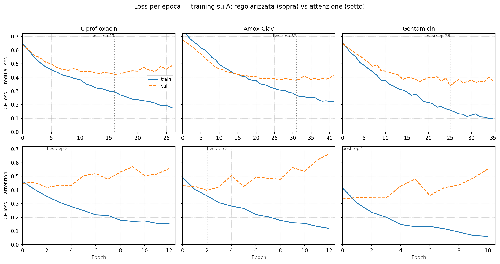
Figure 5. Loss curves per epoch on three drugs (training on A): above the regularized variant, below the attention one; dashed = validation, vertical line = best epoch. Attention reaches its optimum after 1–3 epochs and then diverges (final gap up to 0.55), the regularized variant after 17–32 with contained gaps (up to 0.31). Code: 03-CrossSite-Classifier/.
Documentation: Loss-curve diagnostics.
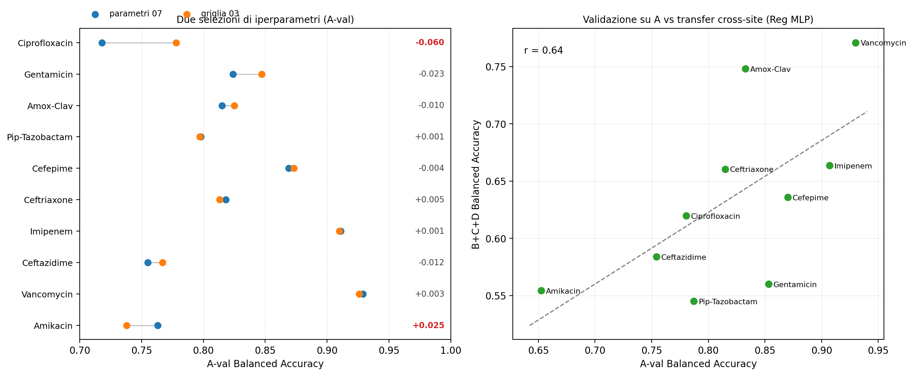
Figure 6. Left: A-val Balanced Accuracy with two hyperparameter selections (07 parameters vs the 03 grid). Right: A-val against cross-site transfer (B+C+D): validation on A does not predict transfer. Code: 03-CrossSite-Classifier/.
Documentation: Loss-curve diagnostics.
5.4 - 04–05: Two side paths, and the lesson on thresholds
The work examines two alternative modeling paths. First, a multi-label model (04) with a shared backbone: as mentioned, each spectrum is tested on average for 6.3 drugs; a binary classifier for each spectrum considers only one label, the one for the drug it is training on, discarding the others; the multi-label model instead produces the 10 logits in a single pass and, with its masked BCE loss that ignores untested labels, sums the contribution of all known ones. The backbone thus receives ~6.3 gradient signals per spectrum (~60K labels from A’s 9.4K spectra, instead of ~9.4K) and can also exploit correlations between resistances (e.g. ESBL strains resistant to multiple β-lactams). The advantage, however, belongs to the backbone, not to the individual heads: each head still sees only the samples tested for its drug (~1–8K); for this reason the result remains on par with the binary model: macro Balanced Accuracy on B+C+D 0.636 (MLP) versus 0.635 for logistic regression OneVsRest, and pooled 0.775 versus 0.781. The second model is a 1D CNN: in place of the first dense layer there are four convolutional blocks that slide along the m/z axis and reduce its resolution with pooling (64/128/256/512 channels), followed by the same final dense layers that produce the 10 logits, with the same masked BCE loss. The idea is to check whether the local structure of the spectrum, adjacent peaks in m/z, contains information that the global dense projection does not capture. This approach also seems not to help: the macro Balanced Accuracy on the pooled test gives 0.762, worse than LR for 9 of 10 drugs. The third experiment implemented a Random Forest model (05), studied on Ceftazidime × E. coli with a 5-seed protocol. This experiment also confirms the picture already outlined: the hyperparameter grid is flat (~0.51–0.60), generalization within site A is there (0.744 ± 0.037 with a tuned threshold), but on B/C/D the ranking does not transfer (AUC 0.505–0.629) and with the default threshold the model predicts zero resistant samples (BalAcc 0.500). These results replicate those of 03; it follows that the problem is not the model family. If, then, the model is not the bottleneck and the data cannot be centralized in clinical practice, the way forward is to bring training to the sites and aggregate the models. Before scaling up, however, federated learning must be demonstrated on a controlled case. Notebook: 04-Multi-Label-mlp/, 05-RandomForest-Ceftazidime-Ecoli/; documentation in docs/04-Multi-Label-mlp/architecture.rst, docs/04-Multi-Label-mlp/results.rst and docs/05-RandomForest-Ceftazidime-Ecoli/.
5.5 - 06a/06b: The federated proof of concept (E. coli-only and all species)
The federated pilot developed on two levels. At the base is a methodological constraint: one species and one drug at a time; in this way we try to neutralize the most insidious confounder: MALDI-TOF mass spectrometry is already used to identify the species, and species-specific peaks are such a strong signal that the model risks learning the species instead of resistance, or at least a species bias, depending on the species’ resistance rate. Among the candidate pairs (during project design Staphylococcus aureus + oxacillin was also considered), E. coli with two β-lactams was chosen: Ceftazidime for the first attempt and then Ceftriaxone, the drug with the most spectra in E. coli, which then became the main case. Although the most populated pathogen–drug pairs were chosen, scarcity remains the dominant factor. The constraint is not the total (~4,500 spectra per pair) but the distribution across sites: for Ceftazidime × E. coli it ranges from 1,987 spectra in D to 213 in B, passing through 1,255 (A) and 908 (C), and in the test split of the small sites the resistant samples drop to 2–3. The first experiments (06-03a/b) use the E. coli pairs, the most represented pathogen in the dataset, on a single drug and a single species: 4,506 spectra in total for Ceftriaxone, 4,363 for Ceftazidime. The extension (06-03c/d) instead runs on all species of the drug, with species masking that zeroes species-predictive bins instead of filtering the data (17,608 spectra for Ceftriaxone and 15,263 for Ceftazidime, before the run splits). The main numbers come from this latter generation.
The E. coli-only level served to fix the clean case: a well-populated pair, four sites, the first federated skeleton with FedAvg, FedProx, FedLR and FedRF. The results were already encouraging: on Ceftriaxone FedAvg MLP reaches 0.680 versus 0.670 for the centralized baseline, with FedProx μ=0.5 at 0.677 and cross-site at 0.591; on Ceftazidime federated learning instead remains below (0.654 versus 0.683, cross-site 0.538). Numbers from the old protocol for MLP and FedProx (μ=0.5 and proximal penalty not yet corrected); FedLR was instead re-run with the correct protocol and reaches 0.698, the best federated strategy for this pair (see below).
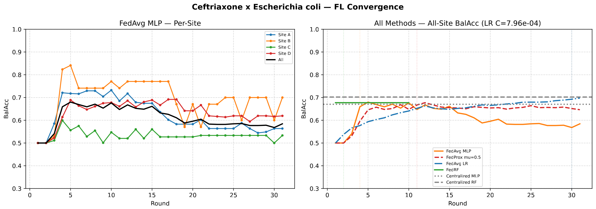
Figure 7. The E. coli-only level on Ceftriaxone: per-site curves for FedAvg MLP (left) and federated strategies with their peak rounds (right), against the centralized baselines in gray. Code: 06b-Ceftriaxone-E-coli/.
Documentation: 06b — analysis and baselines.
A detail of Figure 7 that will return: site C stays stuck around 0.5–0.55, as if it learned nothing, while A, B and D rise. We return to this in §5.9, where the geometry and separability of the sites are measured one by one.
In the right panel, FedLR was re-run with the correct protocol, rising from 0.523 to 0.698 Balanced Accuracy (AUC from 0.724 to 0.761): it is the best federated strategy for this pair, above the centralized MLP baseline (0.670) and just below RF (0.702), with site C remaining the weakest (0.632, from 0.519). The old plateau was an artifact: a single SAGA iteration per round and an untuned threshold; with 8 iterations per round and the threshold chosen on the worst site, the curve is still rising at round 30; with more rounds it would rise further, but the 30 rounds of the original run were kept for comparability. The problem was the protocol, not the model.
The notebook (06-03c) is the heart of the pilot and follows this protocol: 50 rounds; FedProx with the canonical penalty ((μ/2)·‖w − w_g‖²) and μ ∈ {0.5, 1.0}; decision threshold tuned on the worst site. The ranking reopens: the best federated strategy is FedLR at 0.743 (peak at round 35, never collapsed), about one point from the unmasked centralized ceiling (0.751) and ~2.3 from the best masked variant (union, 0.766). FedAvg MLP reaches 0.724 at round 27 but then drifts, and FedProx with μ≥0.5 worsens with the canonical penalty (0.688 at μ=0.5, 0.510 at μ=1.0, with AUC ~0.80: it is the decision, not the ranking, that collapses); FedRF instead leaves the 0.500 block once the threshold is tuned on the worst site and closes at 0.658. The cross-site→federated gap is the value of collaboration: training on A alone stops at 0.610, federated learning reaches 0.743 (+0.13) without ever centralizing the spectra.
Method (Ceftriaxone — all species) |
BalAcc |
|
|---|---|---|
Centralized MLP (unmasked) |
0.751 |
0.813 |
Centralized MLP (union / majority / persite) |
0.766 / 0.761 / 0.727 |
0.813 / 0.815 / 0.783 |
FL FedLR |
0.743 |
0.808 |
0.724 |
0.767 |
|
FL FedProx μ=0.5 |
0.688 |
0.808 |
FL FedProx μ=1.0 |
0.510 |
0.804 |
FL FedRF |
0.658 |
0.815 |
Cross-site MLP |
0.610 |
0.644 |
Cross-site RF |
0.683 |
0.755 |
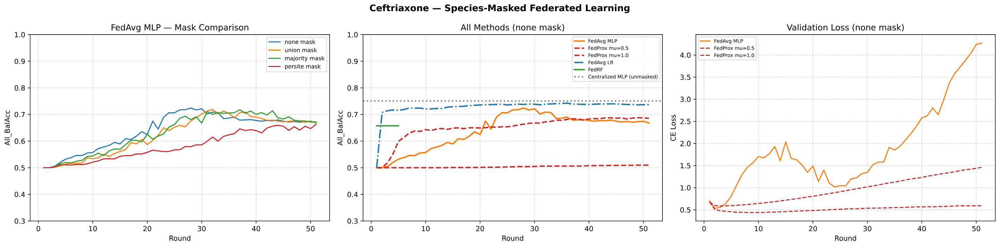
Figure 8. Federated proof of concept on Ceftriaxone (all species): on the left the effect of species masks for FedAvg, in the center the strategies under the winning mask (none) against the centralized ceiling (gray line), on the right the validation loss. Code: 06b-Ceftriaxone-E-coli/, docs 06b-…/federated.rst.
Documentation: 06b — Federated.
The training loss is the clients’ local loss on their own training split, averaged over local steps and then aggregated by the server: weighted average by number of examples for FedAvg/FedLR, simple average of the four sites for FedProx (recorded before weight aggregation). For FedProx the reported loss includes the proximal term (μ/2·‖w − w_g‖²), thus returning a regularized value, not cross-entropy alone, and this is partly why higher μ values show higher curves. The validation loss, by contrast, is computed by the server after aggregation, with the global model, as cross-entropy on the pooled test split (10% per site, weighted by sample size). This makes it a test value, not a validation in the strict sense; it can rise while Balanced Accuracy rises (calibration vs ranking).
The loss detail (Figure 9) explains the two dynamics: FedAvg MLP reaches a training loss of ~0.05, but the validation loss explodes after round 35, while FedProx μ≥0.5 keeps the regularized loss higher (0.17 and 0.46).
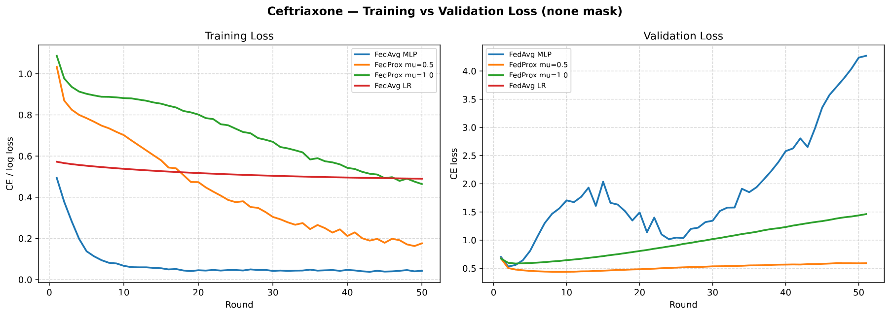
Figure 9. Training and validation loss per strategy (all species): FedAvg MLP drifts in validation after round 35, while FedProx μ≥0.5 slows the local descent. Code: 06b-Ceftriaxone-E-coli/.
Documentation: 06b — Federated.
The site-masked variant (06-03d) confirms the masking lesson: removing the site bins does not close the cross-site gap (0.145 → 0.143). This question is addressed in 5.8.
The pilot also delivers three operational lessons that will return in analysis 08: FedProx is sensitive to the protocol; with the canonical penalty, μ≥0.5 hinders local learning more than it stabilizes it; tuning on the worst site unlocks FedRF (0.500 → 0.658) and pushes cross-site RF to 0.683. This instability is also a consequence of restricting the dataset to a single drug–pathogen pair. The data shrink to a few hundred spectra and the resistant samples to a few units. On the other hand, it is plausible that the same resistance mechanism for a drug occurs in different species, and every additional spectrum, especially a resistant one, is signal for the same question. The signal to learn belongs to the drug, not the species: what matters are the peaks linked to resistance, not the species fingerprint. The confounder, moreover, is neutralized by stratification, not by exclusion: it was therefore decided to implement species-stratified splitting, so that the model is not expected to find shortcuts based on species identity while still exploiting data from all species, which is why the extension zeroes species-predictive bins instead of filtering samples. The pathogen is a confounder to stratify, not a filter to apply; already the first trials on a fixed antibiotic with all data, stratified by pathogen, showed a clear improvement.
Notebooks and diagnostics: 06a-Ceftazidime-E-coli/, 06b-Ceftriaxone-E-coli/; documentation in docs/06a-Ceftazidime-E-coli/federated.rst, docs/06b-Ceftriaxone-E-coli/federated.rst and docs/06b-Ceftriaxone-E-coli/analysis.rst.
5.6 - 07: The centralized ceiling and the hyperparameters
To extend federated learning to all drugs, a reference is needed: what performance is achievable with the aggregated data, and with which per-drug configurations? Analysis 07 produces the dedicated models on all 10 common drugs and their hyperparameters, with a robust selection (worst-site optimization). The average picture on the pooled test is: logistic regression 0.788 / 0.862, MLP 0.784 / 0.848, Random Forest 0.761 / 0.843, showing once again how complexity adds nothing substantial; the best-solved drugs are Imipenem (0.89 / 0.96), Cefepime (0.84 / 0.90) and Amoxicillin-Clavulanic acid (0.82 / 0.89), the hardest Ceftazidime (0.70 / 0.78), Ciprofloxacin (0.72 / 0.80) and Amikacin (0.72 / 0.84). These numbers are the centralized ceiling that analysis 08 aims to approach without sharing data, and the hyperparameters produced here directly feed the federated clients. Notebook: 07-Dedicated-MLP-Aggregated/; documentation in docs/07-Dedicated-MLP-Aggregated/results.rst and docs/07-Dedicated-MLP-Aggregated/integration.rst.
5.7 - 08: Federated learning at scale: how much of the gap does it actually close?
Of the ten common drugs in 07, six were brought into the federation: Amoxicillin-Clavulanic acid, Ceftazidime, Ceftriaxone, Ciprofloxacin, Gentamicin, Piperacillin-Tazobactam. The selection is not random: these are the drugs with resistance represented at every site (threshold: 5% prevalence per site, with at least ~100 resistant samples even at the smallest site, B), a condition for every client to have something to learn and for a per-site Balanced Accuracy to make sense. The four excluded common drugs, namely Amikacin, Vancomycin, Imipenem and Cefepime, have at least one site where resistance is almost absent (≤ 2.4%). The set also covers different classes and mechanisms (fluoroquinolone, aminoglycoside, penicillin-inhibitors, cephalosporins), includes the two controlled cases 06a/06b (Ceftazidime and Ceftriaxone) and ranges from the easiest (Amoxicillin-Clavulanic acid 0.82) to the hardest (Ceftazidime 0.70, Ciprofloxacin 0.72) of the 07 ceiling. The overall result is that federated learning closes from 60 to 94% of the gap between cross-site and pooled, depending on the drug (for Ceftazidime the gap is not measurable because the 08 runs have no cross-site baseline). The residual gap between the best federated strategy and the pooled MLP ranges from 0.008 (Ceftazidime) to 0.061 (Ceftriaxone); on average FedAvg MLP and FedAvg LR are paired (0.728 ± 0.054 and 0.729 ± 0.049 Balanced Accuracy All-site), behind the pooled MLP (0.759) and close to the centralized one (0.744). The ceiling of the six is the average of the dedicated models from 07 on the six drugs; 07, however, covers all ten common drugs, with an MLP average of 0.784. Figure 10 summarizes the strategy ranking, Figure 11 the gap per drug, and the table the results per drug.
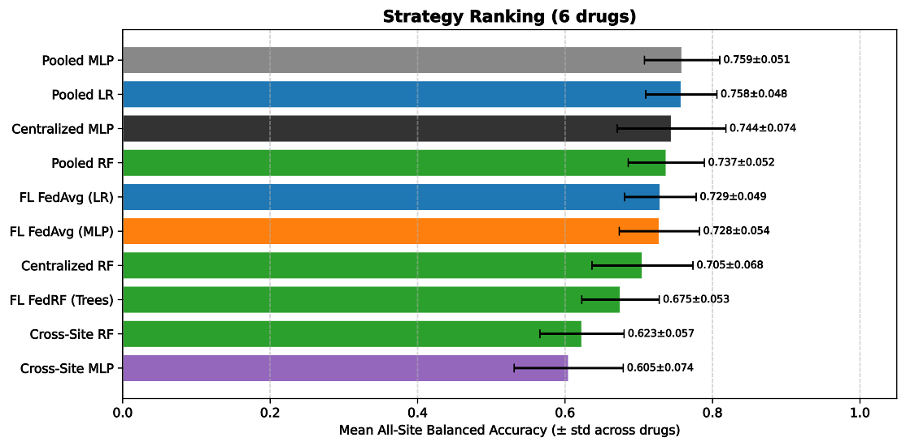
Figure 10. Strategy ranking by mean All-site Balanced Accuracy over the six drugs, with the pooled reference baselines (code: 08-Federated-mlp-lr-rf/Agg-Analysis/, docs aggregated.rst).
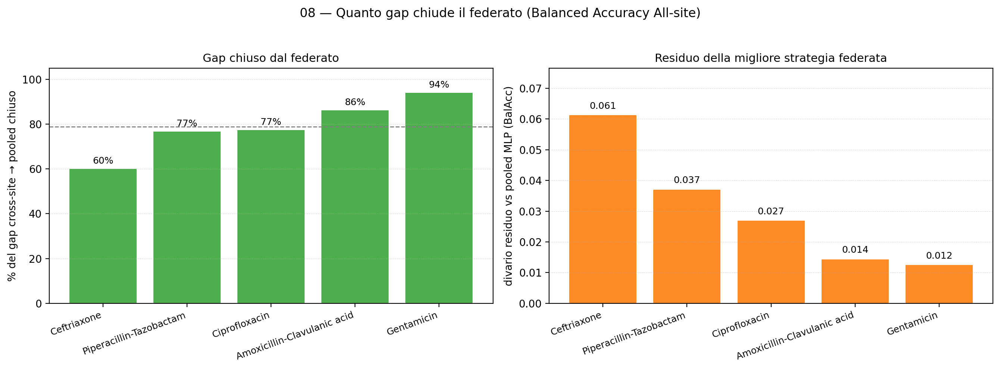
Figure 11. How much of the gap federated learning closes, drug by drug: on the left the percentage of the cross-site→pooled gap closed by the best federated strategy (against the best cross-site baseline), on the right the residual gap with respect to the pooled MLP; Ceftazidime is absent because the 08 runs have no cross-site baseline (code: 08-…/Agg-Analysis/).
Documentation: 08 — Aggregated analysis.
Drug (BalAcc; AUC) |
Centralized MLP |
FedAvg LR |
Cross-site MLP |
||
|---|---|---|---|---|---|
Amoxicillin-Clavulanic acid |
0.836 (0.886) |
0.816 (0.871) |
0.813 (0.868) |
0.765 (0.867) |
0.726 (0.786) |
Ceftazidime |
0.700 (0.776) |
0.673 (0.740) |
0.675 (0.731) |
0.666 (0.726) |
— |
Ceftriaxone |
0.789 (0.851) |
0.722 (0.778) |
0.725 (0.816) |
0.610 (0.815) |
0.604 (0.658) |
Ciprofloxacin |
0.625 (0.760) |
0.702 (0.771) |
0.706 (0.797) |
0.696 (0.775) |
0.590 (0.658) |
Gentamicin |
0.769 (0.853) |
0.768 (0.839) |
0.754 (0.821) |
0.645 (0.845) |
0.526 (0.566) |
Piperacillin-Tazobactam |
0.748 (0.814) |
0.687 (0.750) |
0.703 (0.789) |
0.669 (0.794) |
0.579 (0.617) |
Four patterns emerge:
FedAvg MLP and FedAvg LR are the reliable strategies and are paired: 0.728 ± 0.054 and 0.729 ± 0.049 Balanced Accuracy All-site, both within a few points of the centralized model on almost all drugs; on Ciprofloxacin they even beat the centralized one (0.702 / 0.706 vs 0.625).
FedAvg LR is the most stable and wins on 4 of the 6 drugs (Ceftazidime, Ceftriaxone, Ciprofloxacin, Piperacillin-Tazobactam): it does not overfit and does not degrade across rounds: its peak coincides with the last round or nearly so (drop 0.000–0.007), whereas FedAvg MLP is much less stable and subject to overfitting, and its numbers depend on the chosen round; with the “last round” criterion, without picking the peak a posteriori, the comparison is stark: 0.727 vs 0.675 (means over the six drugs at the last round). That the most robust model (LR) is linear is consistent with the lesson of 01/02.
FedProx is not stabilizable with the μ values tuned in these runs: the curves peak in the early rounds and then decay, so the numbers must be read as transients.
FedRF with the 5-round tree collection is competitive (0.675 ± 0.053, above cross-site RF 0.623 ± 0.057 and close to the centralized RF 0.705 ± 0.068), but remains threshold-sensitive.
The complete picture per drug and per site is in docs/08-Federated-mlp-lr-rf/drugs.rst; strategy ranking and gap per drug are in docs/08-Federated-mlp-lr-rf/aggregated.rst.
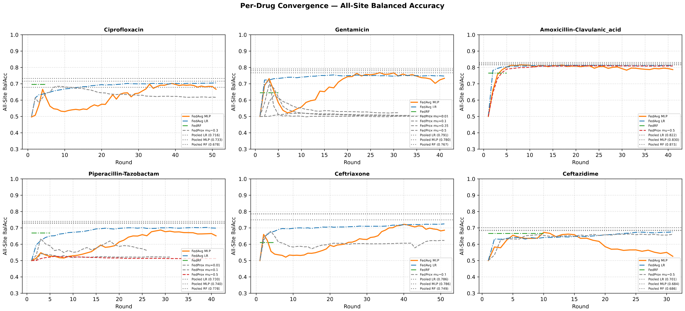
Figure 12. Convergence per drug in the 08 federation (All-site Balanced Accuracy per round): FedAvg LR rises and holds, FedAvg MLP peaks early and decays, FedProx oscillates/decays and FedRF stays flat; dashed lines are the pooled references (code: 08-…/Agg-Analysis/).
Documentation: 08 — Per-drug results.
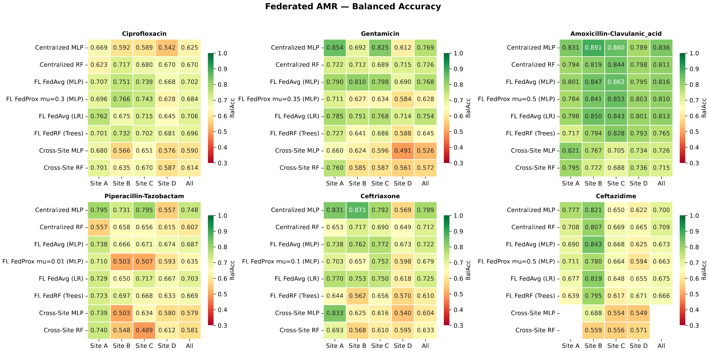
Figure 13. Map per drug and per site (methods × A/B/C/D/All): sites C and D are the hardest, cross-site collapses on D and federated learning recovers (code: 08-…/Agg-Analysis/).
Documentation: 08 — Per-drug results.
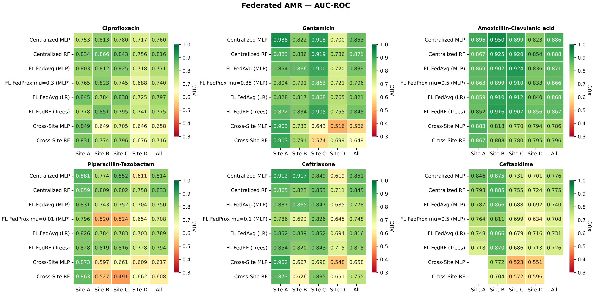
Figure 14. The same map per drug and per site, but for AUC-ROC (methods × A/B/C/D/All): the ranking, which is threshold-independent, remains higher and more stable than Balanced Accuracy, while sites C and D remain the weakest (code: 08-…/Agg-Analysis/).
Documentation: 08 — Per-drug results.
The fact that the centralized–federated gap is larger for Ceftriaxone and Piperacillin-Tazobactam, the drugs where site D dominates the sample, opens the question that occupies the following sections: is site D the problem? The diagnostics in 5.8–5.10 were created to answer this question, and the answer will be counter-intuitive.
5.8 - 08: Why masking does not work: species and site
The most natural idea for reducing domain shift is to “deconfound” the spectra: if the model learns the species or the site instead of resistance, we remove the bins that encode them. Analysis 08 prepares shared species masks, union (966 bins), majority (560 bins), persite (500 bins per site), obtained with per-species Random Forest; in 06a/06b, masking variants are also tested in the centralized baselines. For species the result is clear: zeroing species-specific bins does not damage species classification (the “masking-drop” is +0.0127, and it drops to +0.002 when raising max_features: the concentrated bins are no longer informative); the species signal is redundant across the whole spectrum. Figure 15 shows the per-site trade-off of masking on Ceftazidime: the masks help C and D but penalize A and B, and the “worst-site” criterion swaps one site for the other. The UMAP diagnostics (5.9) also confirm that site separability does not change after masking (silhouette variations ≤0.003, Balanced Accuracy ≤0.016, AUC ≤0.024).
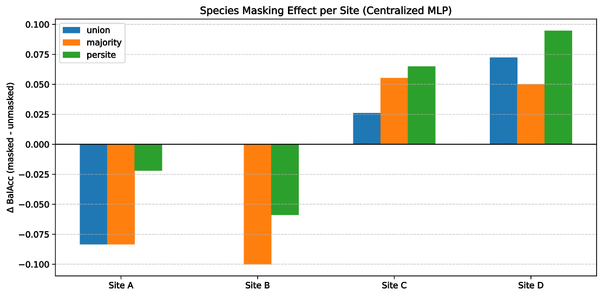
Figure 15. Effect of species masks on the centralized model per site (Ceftazidime × E. coli): masking moves accuracy between sites more than it removes the signal (code: 06a-Ceftazidime-E-coli/).
Site masking. If the problem is the site, the mirror idea is to remove the bins that encode the site (instrument/center) instead of the species. Variant 06-03d tried it in three ways, and none works. First, zeroing the top-K site bins. Second, LDA projection of the linear site directions: LDA classifies the site at 0.0993 (below chance), but projecting away those directions leaves the site RF at OOB 1.0; it follows that the residual signal is non-linear (the per-site standardization has already removed mean differences). Third, adversarial training with gradient reversal: the site probe rises (from 0.66 to 0.72) instead of falling. It would therefore seem that the site fingerprint is also strongly intertwined with resistance, and that the resistance objective rewards the site-informative features. Even the federated site-masked variant, although chosen as the best of the four, moves the gap only from 0.145 to 0.143 (species 0.158, double 0.155).
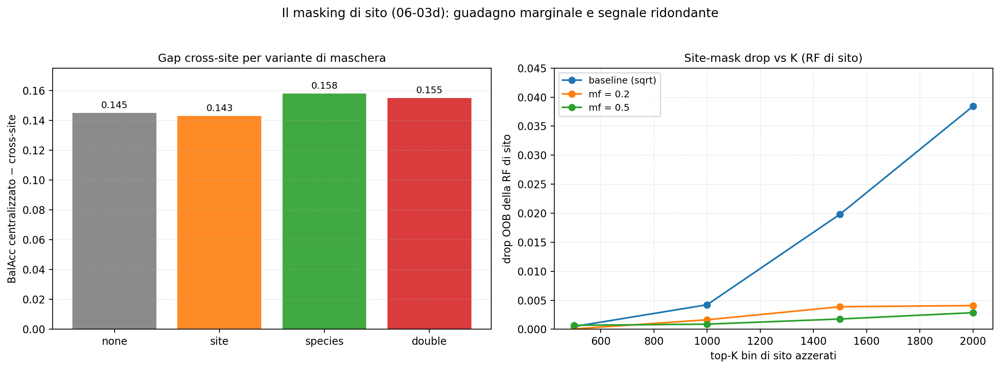
Figure 16. Site masking (06-03d): on the left the cross-site gap for the four mask variants (site 0.143 versus none 0.145, species 0.158, double 0.155); on the right the OOB drop of the site RF as the number of zeroed bins grows: even 2,000 out of 6,000 do not scratch the site (code: 06b-Ceftriaxone-E-coli/, docs mask-diagnostic.rst).
Documentation: 06b — mask diagnostic.
The figure should be read in two steps. On the left the result: the cross-site gap (centralized Balanced Accuracy − cross-site) for the four mask variants: none 0.145, site 0.143, species 0.158, double 0.155. The site-mask is the best variant, but the gain is 0.002, invisible compared with the run-to-run variability measured in 5.10; the species and combined masks, in fact, widen the gap by 0.010–0.013. On the right the reason: the site RF loses very little when the most predictive site bins are zeroed: even removing 2,000 of the 6,000 bins, the OOB drop stays ≤0.038 in the baseline configuration and ≈0.003–0.004 in the concentrated ones (max_features 0.2/0.5). The site signal, like the species one, is redundant across the whole spectrum: zeroing a few hundred bins does not remove it, and this is why none of the three deconfounding strategies (bins, LDA, adversarial) manages to make the features site-invariant.
The conclusion is documented in docs/06b-Ceftriaxone-E-coli/mask-diagnostic.rst: the cross-site gap (~0.20 of Balanced Accuracy) appears to be a genuine cost of domain shift, not an artifact that can be cleaned away; the practical implication would be that AMR models are site-specific, and that generalization should be addressed by federating (each site trains locally), not by deconfounding the spectra. The shared species masks of 08 and their construction are documented in docs/08-Federated-mlp-lr-rf/Species-Masking/index.rst.
5.9 - 08: The structure of the spectrum: UMAP and the “geometry” of sites
If the species and site signal is distributed across the spectrum and cannot be removed, it is worth looking at it: the UMAP diagnostic (Species-Masking/UMAP-Diagnostic-Interactive.ipynb, docs docs/08-Federated-mlp-lr-rf/umap-diagnostic.rst) projects the 25,604 deduplicated spectra into 2D and analyzes them with clustering in PCA-50 space, separability metrics and composition. Two results matter for federated learning.
The first is structural: the embedding, built without labels (neither species nor site), organizes itself by species, not by site. The clusters most enriched in site D are islands of shared species (Enterobacteriaceae at 60% of D with E. coli 39% and K. pneumoniae 36%; Proteus 58%; S. aureus 54%): D is not a geometric island, it is a mix of the same populations as the other sites, with different shares. The color by species is only a posteriori reading.
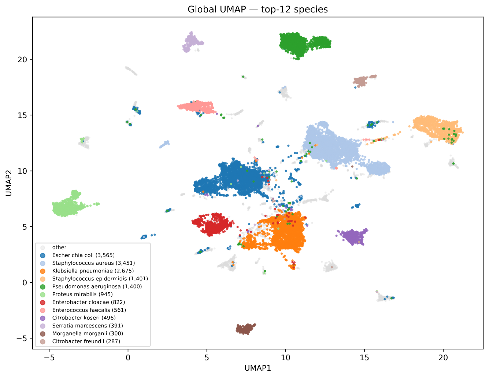
Figure 17. Global UMAP of the deduplicated spectra, colored by the 12 most frequent species: the geometry is driven by species, not by site; the coloring comes afterwards, the clustering is unsupervised (code: 08-…/Species-Masking/, docs umap-diagnostic.rst).

Figure 18. Site D in the global embedding: on the left D (red) against the rest (gray): D is scattered among the same islands as the other sites, not an island of its own; in the center the cluster composition per site; on the right the clusters ordered by D-lift, i.e. how much D is over-represented in each (code: 08-…/Species-Masking/, docs umap-diagnostic.rst).
Documentation: 08 — UMAP diagnostics.
The second is quantitative and explains an apparent contradiction in the earlier analyses: D has the lowest silhouette (0.008) but is, together with A, the most separable site for classifiers (5-NN balanced accuracy 0.843, linear AUC 0.949, second only to A). The explanation is that the two metrics answer different questions: silhouette measures geometry (D is large and crosses seven species clusters, hence “scattered”), while the probes measure predictability (D is perfectly recognizable). Moreover, raw accuracy is misleading: with the site shares (A 33%, B 9%, C 18%, D 39%) a “everything else” predictor already scores 0.67–0.91; this is why balanced accuracy and AUC are used. D is therefore not an alien site: it is a large, heterogeneous and highly predictable site.
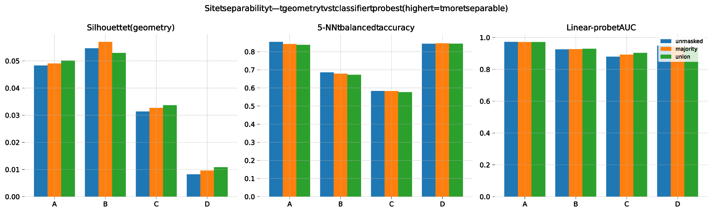
Figure 19. Site separability: geometry (silhouette) vs classification probes (balanced accuracy, linear AUC), before and after species masking (code: 08-…/Species-Masking/).
From here comes a consequence that prepares the test in 5.10. If D is not alien, its difficulty does not lie in how recognizable it is: D’s separability does not correlate with the Balanced Accuracy that federated models achieve on D (r = 0.12). The causes compatible with the data are three:
heterogeneity: D crosses seven species clusters, so its per-site BalAcc is the average of populations with different prevalences and signatures, and a single decision boundary is a compromise;
the protocol: with a species-stratified split, no species is in train and test at the same time, so a heterogeneous site tends to have more species that appear only in the test set, and part of the gap is generalization to unseen species;
prevalence: D has genuinely different resistance rates, and a threshold tuned elsewhere does not transfer.
None of the three is solved by deconfounding (5.8) or by excluding D: they are addressed with per-site thresholds, per-species evaluation and D inside the federation, consistent with the fact that D is the site that loses the most when excluded (5.10).
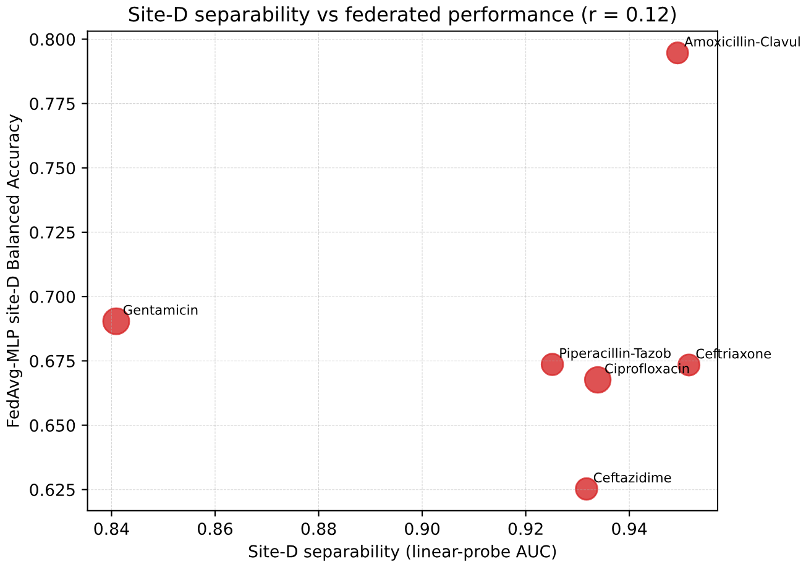
Figure 20. Separability of D (linear AUC) against the Balanced Accuracy of D for FedAvg MLP models, drug by drug: no relationship (r = 0.12): the difficulty of D is not how recognizable D is (code: 08-…/Species-Masking/, docs umap-diagnostic.rst).
Documentation: 08 — UMAP diagnostics.
5.10 - 08: The decisive test: does D harm the federation?
At this point the question becomes more precise: if federated learning struggles more where D dominates, is it because D “poisons” the global model? The test is a leave-D-out ablation: retrain everything without client D, keeping it in evaluation, with an identical configuration (same splits, seed, hyperparameters, thresholds) on three pilot drugs (Ceftriaxone, Ciprofloxacin, Ceftazidime). If D were toxic, excluding it should improve A/B/C. This hypothesis is not confirmed; the average variations on A/B/C are small and non-systematic (Figure 21), while D is the only site with a stable sign: excluding D loses an average Δ of −0.03/−0.046, depending on the round selection criterion. An important methodological detail: the reported value depends on the chosen round (peak vs final), and the drop in B initially observed (−0.044) turns out to be fragile.
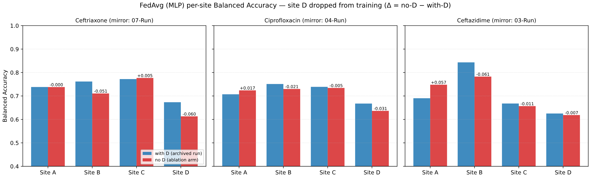
Figure 21. Leave-D-out ablation, FedAvg MLP per site and per drug: excluding D does not help the other sites; D loses when it is excluded (code: 08-…/Site-D-Ablation/, docs site-d-ablation.rst).
A follow-up on Gentamicin, the fourth drug, was also carried out to resolve two ambiguities of the pilot analysis: the fact that it used a single seed (the per-site deltas were not separable from noise) and that the no-D variant changed both D’s data and its aggregation weight (on Gentamicin D accounts for ~48% of the sample). The follow-up uses three variants with the same code, namely withD (A/B/C/D, 3 seeds), noD (A/B/C, 3 seeds) and weight (A/B/C/D but uniform weights: D at 25%, B and C doubled, 2 seeds), and closes the circle with three results:
run-to-run noise is ±0.011–0.044: the pilot deltas (~0.02–0.06) are largely noise. In particular B does not drop without D (+0.018 ± 0.034): “B drops for every drug” was seed noise, while the only effect that replicates is on D: when excluded, D loses −0.042 ± 0.011, negative in all three seed pairs.
D’s weight is not the mechanism: in FedAvg clients are weighted by the number of samples (on Gentamicin D accounts for ~48%, C 26%, A 14%, B 12%). The
weightvariant keeps all sites but imposes uniform weights (25% each: D halved, B and C doubled), so if the problem were D’s dominance the other sites should improve. Instead nothing improves: B worsens consistently (−0.055 ± 0.003), C worsens (−0.054), A stays unchanged, and one of the two runs collapses (0.630 versus 0.72–0.76). Removing weight from D destabilizes rather than helps, consistent with the fact that the sample-weighted average is the one that approximates pooled training, while uniform weights over-represent the small and noisier sites.the controls validate the intervention:
uniform − withDis exactly 0.000 for Centralized and FedRF (methods that do not use client weights), and FedLR moves by ≤0.02; the variant changed only what it was supposed to.
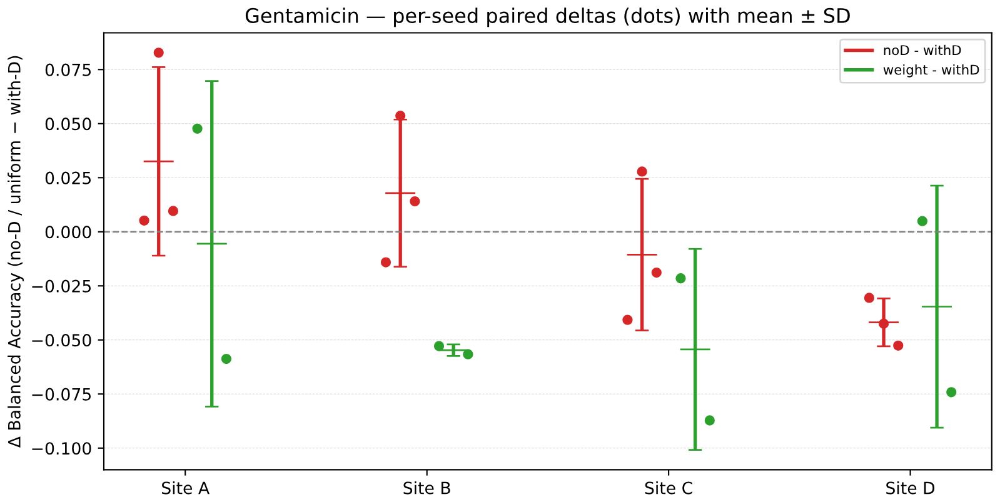
Figure 22. Gentamicin follow-up: paired deltas per seed (points) with mean ± SD, against the zero line. The per-site “noise” is comparable with the observed effects; the only stable effect is on D (code: 08-…/Site-D-Ablation/compare_followup.ipynb).
The figure should be read as follows: for each site the red points are noD − withD and the green ones uniform − withD, with bars = mean ± SD over seeds and dashed line = zero. On A/B/C the red points are small and scattered around zero (noise); on D they are all negative. An interesting exception remains, the pooled Random Forest improves without D (B +0.094, C +0.063), making it an hypothesis, not a conclusion.
The answer to the initial question is therefore that D does not harm the federation. Its weakness in the per-site numbers is a cost of transfer, composition and calibration: it is genuinely the hardest site to predict for a model that does not train on it. Excluding it does not help the other sites and damages D. Its aggregation share, once suspected, is not the lever of the problem. The leave-D-out ablation and the Gentamicin follow-up are documented in docs/08-Federated-mlp-lr-rf/site-d-ablation.rst.
6. Discussion
The results of the eight analyses draw a coherent picture.
The AMR signal exists and is learnable, but it is weak, confounded with species and redundantly distributed across the spectrum. A logistic regression captures much of it (01) and more complex models add nothing (02, 04, 05): complexity is not the lever.
The main problem is domain shift. A model trained on one site loses 15–19 points of Balanced Accuracy on the others (03), regardless of sample size; the largest site is the hardest target, and its difficulty is not sample size but transfer, composition and calibration (5.9); local validation does not predict transfer, and fragile hyperparameter and threshold selection is the norm.
The practical solution is federated learning. On the controlled case it reaches 0.743, about one point from the unmasked centralized ceiling (0.751), i.e. ~99% (06b); on six drugs it closes 60–94% of the cross-site→pooled gap (08), with FedAvg MLP and FedLR paired and reliable, with FedLR the most stable because it does not degrade across rounds; FedRF is valid but threshold-sensitive, and FedProx remains to be stabilized. All of this without ever sharing the spectra.
Deconfounding does not work (5.8): species and site are non-linear, redundant and entangled with resistance; UMAP itself confirms this by showing that the spectrum, built without labels, organizes by species and that the sites, although predictable by the probes, are not geometrically separated (5.9).
The difficulty of a site is not a sentence: the UMAP diagnostic and the leave-D-out ablation show that site D, the weakest in the per-site metrics, is neither an island nor a brake on the federation: it is a large and heterogeneous domain, with a genuinely different resistance prevalence; its difficulty is a cost of transfer, composition and calibration (5.9), and D is the site that benefits most from inclusion (5.10).
Evaluation must be rethought: the Gentamicin follow-up quantifies run-to-run noise (±0.01–0.04) and shows that without seed replicates the small per-site deltas are not interpretable; threshold-free metrics and multi-site protocols are needed.
Limitations. The first round of experiments uses a single seed (partly mitigated by the three-seed Gentamicin follow-up); the federation is a simulation on a public dataset, not a real distributed infrastructure; the dataset’s TIC normalization is not perfect; labels are partial and for some drugs extremely imbalanced; computational costs (4 clients locally) limited the number of runs.
7. Conclusions and perspectives
The work shows that ML prediction of antibiotic resistance from MALDI-TOF spectra is feasible but site-specific: the signal is real, complexity is not the key, and the dominant constraint is domain shift between hospitals. federated learning is the practical answer to this constraint: it brings the distributed model close to the centralized ceiling while keeping data at the sites; its robustness depends not on model complexity but on the training structure and on the heterogeneity of the data per site. Two results close the picture: deconfounding does not work, species and site are entangled and no mask separates them (5.8); the D case, apparently the most problematic, turns out to be the ideal test bed: its difficulty is a cost of transfer, composition and calibration, excluding it is not convenient and its aggregation share is not the mechanism (5.9–5.10).
Future directions follow: systematic multi-seed experiments with confidence intervals and threshold-free metrics; per-species and per-prevalence evaluation; probability calibration and per-site thresholds; stabilization of FedProx and client weighting strategies: in the Gentamicin follow-up uniform weights worsen B and C (respectively −0.055 and −0.054) and destabilize one of the two runs; alternatives to masking for deconfounding; species-stratified splits for generalization to unseen species; extending the federation to more drugs and species; and finally prospective validation on data collected in real time and on different instruments, possibly within a real federation between facilities.